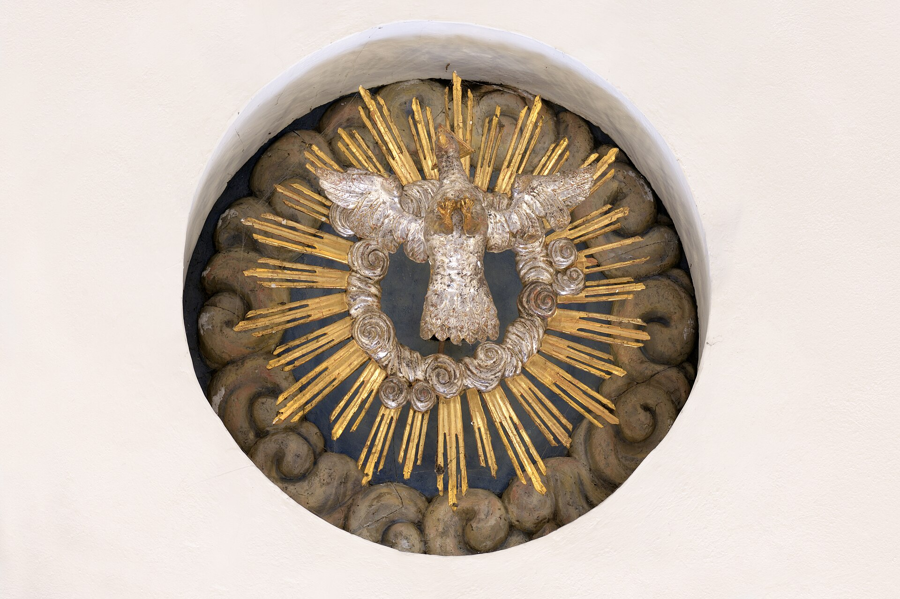

Val Gardena 是拉定语（Ladin）五个山谷之一：这是一种从罗马帝国通俗拉丁语直接演化来的语言，与瑞士的罗曼什语和弗留利的弗留利语同属雷托-罗曼语族。谷内三语并行（Ladin / Deutsch / Italiano），路牌、学校、教堂全部三语标注。同时，这里是意大利最著名的木雕产区：17 世纪起家家户户在漫长冬季刻木为生，Ortisei 主街两侧的工坊至今仍在传承。
看点路线
Il Percorso
- 1Ortisei 主街 Via Rezia：木雕工坊 + 户外装备店 + 咖啡馆
- 2圣贾科莫教堂（Chiesa di San Giacomo）：木雕艺术的巅峰之作
- 3路牌找三语：Ladin（Urtijëi）/ Deutsch（St. Ulrich）/ Italiano（Ortisei）
- 4木雕博物馆（Museum Gherdëina）：18-20 世纪作品 + 木雕学校作品
文化看点
Ladin · 5 个停留点
拉定语（Ladin）
Val Gardena 的第一语言：约 90% 居民以拉定语为母语。这是一种从罗马军团士兵的通俗拉丁语演化来的语言，历经两千年没有被德语或意大利语淹没。五个拉定山谷（Val Gardena / Val Badia / Val di Fassa / Livinallongo / Ampezzo）分布在多洛米蒂核心区，各地方言略有差异。
三语路牌
Ortisei 的每块路牌都写着三种语言：Ladin（Urtijëi）、Deutsch（St. Ulrich）、Italiano（Ortisei）。南蒂罗尔 1948 年获得自治权后，拉定语被承认为官方语言之一。学校里三门语言并用--这里的每个孩子都是天生的三语者。

木雕传统
Val Gardena 的木雕传统始于 17 世纪：漫长冬季里，山民在炉火边用松木与枫木雕刻圣像与玩具补贴生计。19 世纪发展成为出口产业（全欧洲的天主教圣像多出自此谷）。今天 Ortisei 主街两侧仍有数十家工坊，工匠现场雕刻。

圣贾科莫教堂
Ortisei 镇中心的主教堂：巴洛克内装 + 本地木雕工匠的祭坛与圣像。教堂本身是"山谷木雕技艺集大成"的作品--内部几乎所有木质构件都出自本地工坊。
Museum Gherdëina（山谷博物馆）
Ortisei 主街旁的山谷博物馆：拉定语文化 + 地质 + 木雕三层展览。重点看 18-19 世纪的木雕圣像（当年出口欧洲各地的"量产"工艺品）与本地画家的作品。€5，1 小时可看完。
历史故事
Le Storie
壹拉定语：活着的化石
拉定语（Ladin）是欧洲最小的官方语言之一：全球仅约 30,000 名使用者，全部集中在多洛米蒂的五个山谷（Val Gardena、Val Badia、Val di Fassa、Livinallongo、Ampezzo）。
它从罗马帝国军团的通俗拉丁语直接演化而来，历经两千年没有被周围的德语或意大利语吞没--因为山谷太深、太偏，外界的影响始终有限。
语言学家称它为"雷托-罗曼语族的活化石"：听拉定语，你能听到凯撒时代士兵说话的回声。
贰一个孩子会说三语
Val Gardena 的每个孩子在三语环境中长大：家里说拉定语（90% 居民的母语），学校教德语和意大利语，电视和社交媒体上三种语言混杂。
这种三语并行不是政治妥协的结果，而是日常生活的自然状态：Ortisei 镇的路牌、餐厅菜单、教堂公告全部三语。一个 Val Gardena 的孩子到 18 岁时已经具备了学习任何第四语言的优势--多语者的大脑是"弹性"的。
叁木雕的黄金时代
Val Gardena 木雕的黄金时代在 19 世纪：工业化后的天主教复兴带来圣像需求的爆发。Val Gardena 的工坊用"生产线"模式（有人专刻脸、有人专刻手、有人专刻衣服褶皱）批量生产木雕圣像，出口到全欧洲与美洲。
最盛期，谷内有超过 2,000 人从事木雕。20 世纪后塑料替代品冲击了量产市场，但高端手工木雕活了下来：今天的工坊更小更精，一个工匠可能花一个月雕一座 40 厘米的天使。
肆Museum Gherdëina 的三层叙事
Ortisei 的 Museum Gherdëina（山谷博物馆）用三层楼讲完了 Val Gardena 的故事：底层是地质与自然（白云岩、化石、矿物），一层是木雕史（从 17 世纪到今天的作品序列），顶层是拉定语文化与本地画家。
值得找的一件展品：一组 18 世纪的"量产"圣像（同一个模子的六个版本）--它揭示了木雕产业的"工业"面。€5 入馆，1 小时看完全部。周一闭馆。
伍San Giacomo：山谷的教堂
Ortisei 主街上的 Chiesa di San Giacomo（圣雅各大教堂）建于 12 世纪，18 世纪巴洛克重建。但它真正的身份是"山谷木雕技艺的集大成"：教堂内部几乎所有的木质构件--祭坛、圣像、唱诗班席--都出自本地工坊。
走进去抬头看：巴洛克的繁复与木雕的精确在同一件作品上叠加。这座教堂不收门票，白天开放。如果你只看 Ortisei 的一个室内空间，选这里。
陆拉定语 vs 罗曼什语
很多人把拉定语与瑞士的罗曼什语（Romansh）混为一谈。它们确实是亲戚：都属于雷托-罗曼语族，都从通俗拉丁语演化。但两地的山谷在地理上被阿尔卑斯主脊分开，语言也各自独立发展了上千年。
一个 Val Gardena 人去瑞士的格劳宾登州旅行，能"大概听懂"罗曼什语的广播--就像意大利人听西班牙语。但两种语言不能直接互通。拉定语是"意大利的罗曼什"：同样的古老，更少的知晓者。
柒山民的餐桌
Val Gardena 的餐桌是奥意混合体：早餐面包 + Speck + 果酱（德式），午餐 Canederli 汤 + Salumi（意式），晚餐可能是 Tirtlan（拉定油炸饼）或 Kaiserschmarrn（奥地利煎饼）。
葡萄酒：白葡萄酒通常是本地品种 Kerner 或 Sauvignon Blanc（南蒂罗尔是意大利最好的白葡萄酒产区之一）；红葡萄酒 Lagrein 或 Schiava。Ortisei 的餐厅都有本地酒单。
捌三语的"语言政治"
南蒂罗尔的语言政治是欧洲最复杂的双语（三语）体系之一：1919 年意大利从奥匈帝国接收南蒂罗尔后，墨索里尼强制意大利化（禁德语教学、改地名）。
1948 年自治区法案恢复了德语地位；1972 年的新自治法承认拉定语为第三官方语言。今天的三语路牌是几十年政治博弈的结果--每一块路牌上三个名字的排列顺序都有法律依据。
玖冬天怎么做木雕
在 Val Gardena，"冬季"几乎占了一年的三分之一：11 月到 4 月，海拔 1,236 米的 Ortisei 被大雪覆盖。传统上，这就是木雕的季节。
现代的木雕学校（Istituto d'Arte）仍然遵循这个节奏：学生白天在工坊雕刻，晚上回家。学徒期至少三年，毕业作品通常是一座完整的圣像或世俗人物雕像。去主街的工坊看：有些工匠仍然在门口现场雕刻（冬天在里面），你可以隔着玻璃看他们的手。
拾拉定语的未来
拉定语面临的最大威胁不是德语或意大利语，而是英语：年轻一代在社交媒体上用英语交流，拉定语的使用场景在缩小。
但 Val Gardena 的拉定语使用率仍然是五谷中最高的（90% 日常使用）。学校里拉定语是教学语言之一、电视有拉定语新闻、甚至 Netflix 的部分节目有拉定语字幕。一个小语言的存续，靠的是一群坚持"在家说母语"的山民。
参观贴士
Consigli Pratici
- 主街 Via Rexia 漫步 30 分钟：工坊 + 户外店 + 咖啡；傍晚 aperitivo 时段最热闹
- 买木雕：手工小件（动物、圣诞装饰）€20-100；大件雕塑 €200+，可要求工匠现场刻名
- 本地美食：Canederli（面包丸子）、Speck（烟熏火腿）、Tirtlan（油炸馅饼）、Strudel（酥皮卷）
- 餐厅推荐：主街附近的传统餐厅 + 山区小馆；10 月部分餐厅已换秋季菜单
- 与户外活动组合：上午上山徒步，下午回来逛主街 + 博物馆 + 喝咖啡
顺路同游
Da Non Perdere